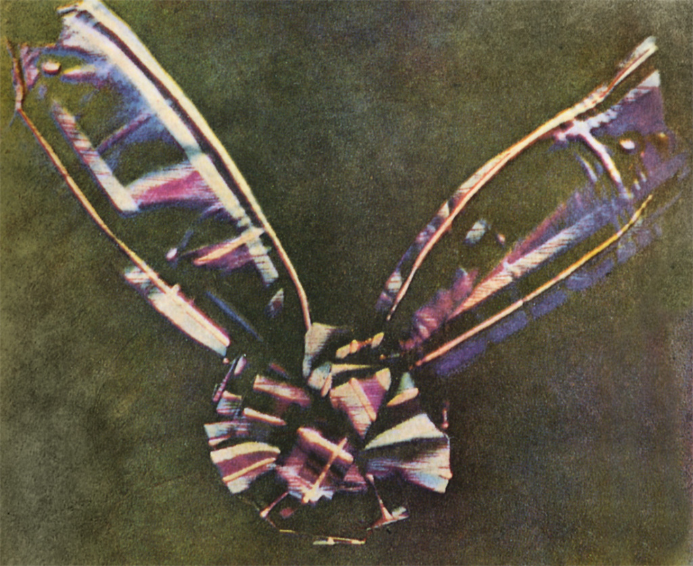
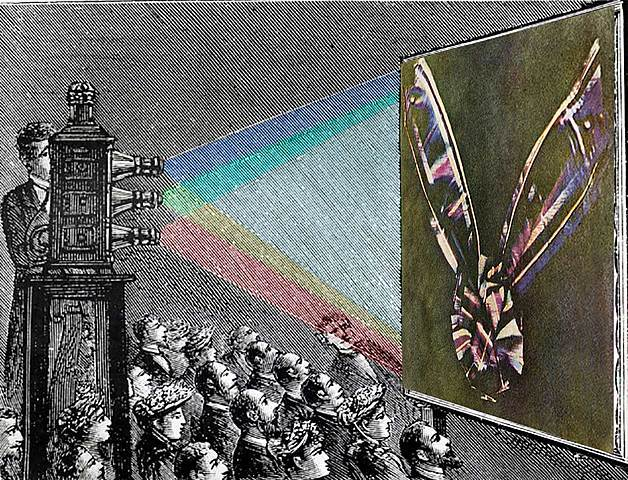

Los procedimientos fotográficos utilizados durante el siglo XIX fueron muy diversos. A partir de 1855 triunfó el sistema de los negativos de colodión húmedo, que permitían positivar muchas copias en papel a la albúmina, con gran nitidez y amplia gama de tonos. Estas copias a la albúmina fueron el tipo de papel fotográfico más empleado en la segunda mitad del siglo XIX. Todos estos sistemas se basaban en procesos artesanales, y requerían destrezas manuales significativas por parte de los fotógrafos, así como conocimientos prácticos de química y física.
Después de 1880 se desarrollaron las nuevas placas secas al gelatino-bromuro, que podían ser producidas de modo industrial y comercializadas sin limitaciones. Los fotógrafos compraban cajas de placas vírgenes, ya sensibilizadas, listas para cargar en chasis y ser expuestas en la cámara. También eran placas de vidrio; pero pronto empezó a usarse el soporte flexible de película de nitrato.
A partir de 1888 se sacó al mercado una cámara que utilizaba carretes de película enrollable, en lugar de placas planas.
Pero obviamente el paso más grande fue pasar de fotografías en blanco y negro a fotografías en color. La fotografía en color fue experimentada durante el siglo XIX, pero no tuvo aplicaciones comerciales, por su dificultad e imperfección. Los experimentos iniciales no fueron capaces de conseguir que los colores quedaran fijados en la fotografía. La primera fotografía en color fue obtenida por el físico y matemático escocés James Clerk Maxwell.
Para ello, realizó tres fotografías sucesivas, con una lente con filtros diferentes: rojo, verde y azul, ya que a partir de estos colores el cerebro crea todos los demás. Cada una de las tres imágenes se proyectaba sobre la misma pantalla con la luz del color del filtro que se había empleado para tomarla.
A lo largo del siglo XIX, y principios del XX, algunas fotografías se coloreaban a mano, con acuarelas, óleo, anilinas, u otros pigmentos. Pero este coloreado manual era artístico y no técnicamente fotográfico.
La auténtica primera placa fotográfica en color, conocida comercialmente como Autochrome, fue patentada en diciembre de 1903 por los hermanos Lumière, pero no llegó a los mercados hasta 1907. Esas placas autocromas se fabricaban en Francia, y eran transparencias o diapositivas en soporte de vidrio. El sistema se basaba en una rejilla con puntos, cada uno de los tres colores elementales, que se ponía sobre una placa fotográfica en blanco y negro y, al revelarla, la intensidad de luz correspondía a la del color de cada punto, formándose una imagen en colores.
 